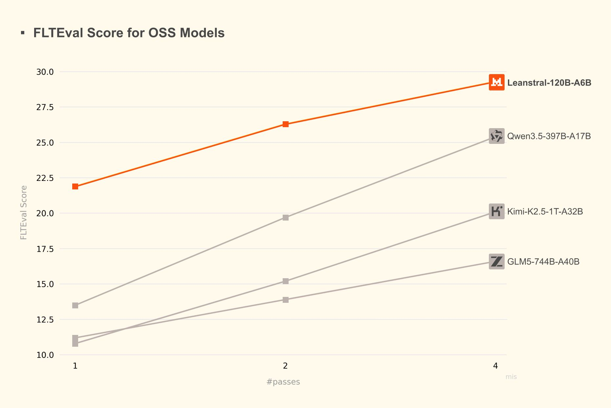
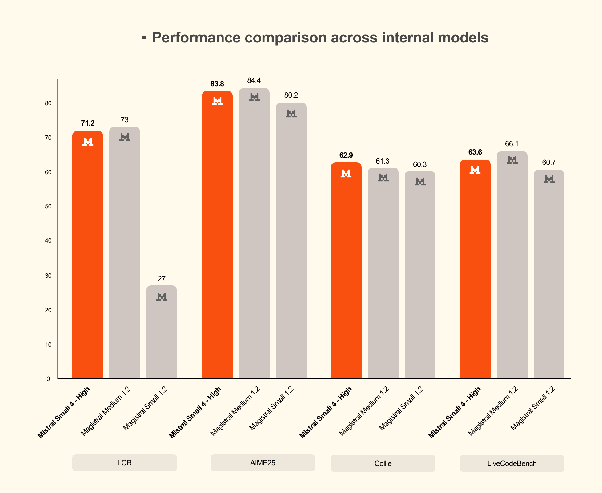

THE FRONT PAGE
EDITOR'S NOTE: The tools we build now demand more rigor than the systems we’ve inherited—yet the gap between ambition and accountability has never felt wider. #The brittle scaffolding of agentic AI and the unpaid labor propping it up
A pharmaceutical-grade LSD derivative, MM120, demonstrated measurable anxiety reduction in trials—reviving psychedelics as serious medicine, though long-term cognitive tradeoffs remain uncharted. Regulators now face the paradox of scheduling a drug designed to dissolve the ego it might also destabilize.
Engineers treating language model pipelines as ad-hoc distributed systems are rediscovering the same failure modes—latency cascades, partial failures, and debugging nightmares—that plagued microservices a decade ago. The difference? This time, the components hallucinate.
Anthropic’s Claude demonstrates it can assemble playable Godot projects from prompts, raising the bar for LLM-driven game prototyping while quietly offloading the thorny work of architectural coherence and runtime edge cases to human engineers. The demo’s polish papers over the old question: if the AI writes the spaghetti, who’s left to untangle it?
By crowdsourcing 30 billion images via mobile gameplay, Niantic has effectively bypassed traditional data acquisition costs for its Large Geospatial Model. This scale allows robots to navigate physical environments with high precision, though it cements a precedent where consumer privacy is the unquantified subsidy for industrial automation.

A new open-source tool bridges the gap between coding and formal verification, letting engineers generate and mathematically prove software in one workflow. The tradeoff? Adoption demands a steep climb up the theorem-proving learning curve.
The media framework integrates further Rust-based components to mitigate decades of C-related memory vulnerabilities, though the overhead of cross-language bindings remains a friction point for performance purists. It is a slow, necessary admission that raw speed is no longer an excuse for fragile codebases.
A new interactive tool promises to decode the US labor market’s post-pandemic chaos, mapping sector shifts and wage stagnation in real time. The catch: its reliance on lagging government datasets may render insights obsolete before they’re published.
While the industry chases high-level abstractions, Meta is reinvesting in its custom memory allocator to combat the invisible tax of heap fragmentation in large-scale C++ services. It is a necessary regression into the basement of software engineering, acknowledging that even the most advanced models eventually choke on poorly managed bytes.
Nvidia’s new Vera CPU, tailored for 'agentic' AI workloads, marks a bet that autonomous systems will demand specialized silicon—at the risk of fragmenting an already crowded accelerator market. Early benchmarks suggest a 30% efficiency gain in multi-agent coordination tasks, but adoption hinges on whether developers abandon GPU-centric pipelines.
A new CLI from Apideck claims to slash context-window bloat for AI agents by 40% compared to MCP—useful for resource-starved deployments, but early benchmarks suggest a tradeoff in response latency for complex queries. The usual caveat applies: fewer tokens in, less nuance out.
MODEL RELEASE HISTORY
No confirmed model releases were detected for this edition date.

The release targets the increasingly crowded 'efficient-tier' market, prioritizing low latency and cost-efficiency for agentic workflows at the inevitable cost of deep reasoning depth found in larger, more resource-heavy architectures. It represents a pivot toward pragmatic utility over the diminishing returns of scaling for scaling's sake.